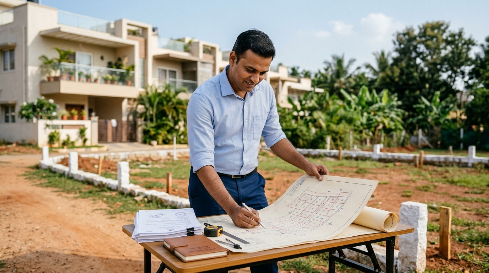

01
Residential & Industrial Land Liaison
BDA, BBMP, CITB, KIADB, and Revenue Department
Navigating Bengaluru's regulatory labyrinth requires deep, decades-long institutional familiarity. We take full charge of clearing pending applications, obtaining title documentation, and resolving bottlenecks with municipal and development authorities.
Scope of Work:
- Absolute Sale Deeds & Registration: Drafting, stamp duty assessment, and registrar execution.
- Allotments & Lease-cum-Sale Deeds: Regularization of long-pending BDA, CITB, and KIADB allotments.
- Possession (PC) & Occupancy (OC) Certificates: Inspections, compliance reports, and issuance.
- Khata & Tax Assessment: A-Khata bifurcations, amalgamation, title transfer, and tax clearance.
- Departmental NOCs: Fire force, environmental, water board (BWSSB), electricity (BESCOM), and airport authority.